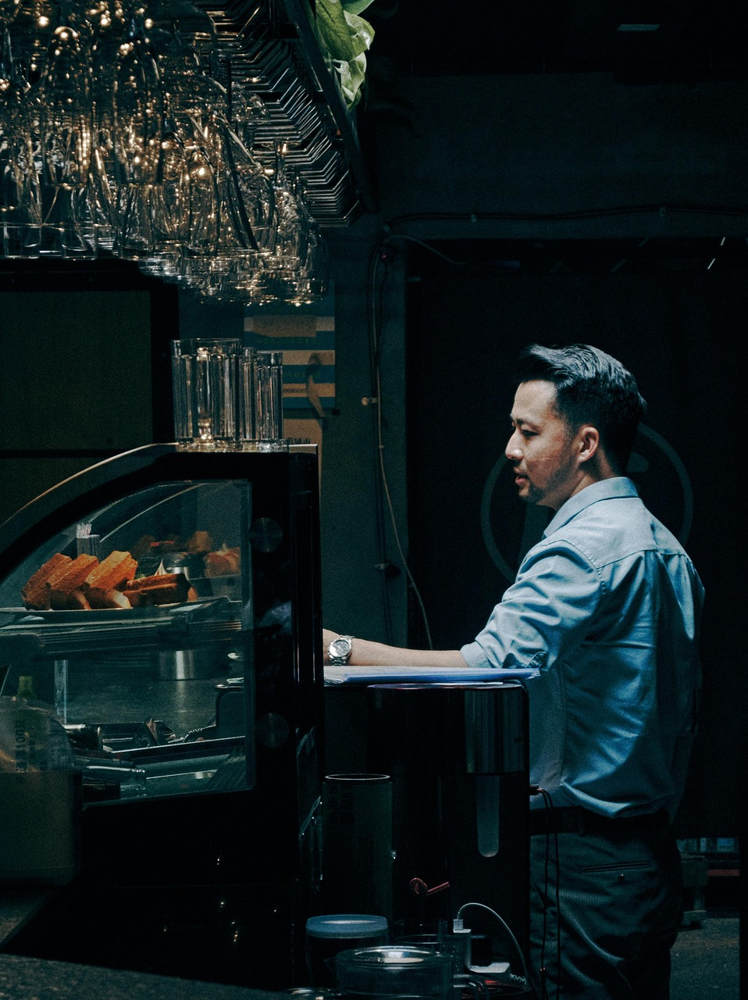

КОФЕ • ВЫПЕЧКА • ЗАВТРАКИ • ХЛЕБ
Свежий кофе каждый день
Эксклюзивные сорта
Мы постоянно ищем новые и интересные лоты, чтобы дать нашим гостям лучшее, то есть на рынке
Мы предлагаем нашим гостям какао и шоколад лучших сортов, разных регионов. Это не безымянная смесь. Каждый имеет свой вкусовой и ароматический профиль
Мы везём наши круассаны из Франции и Бельгии. Мы находим хлеб вкусом «как из детства». За нашей выпечкой гости приезжают из других районов города
Зарегистрируйся в нашей бонусной программе, используй бонусный счёт для оплаты напитков и выпечки.
Бонусы не сгорают. 1 бонус = 1 рубль
ПОСЕТИТЬ КОФЕЙНЮ И ЗАРЕГИСТРИРОВАТЬСЯ В БОНУСНОЙ ПРОГРАММЕВсё это можно сделать в прямом общении с бариста в нашем сообществе VK

Вы всегда можете купить зерно, на котором мы варим наши напитки!
По вашей просьбе бариста поможет подобрать зерно для вашего способа приготовления, подберёт помол и смелет зерно на профессиональной кофемолке
Мы всегда вас ждём по указанным ниже адресам.
Будем благодарны, если вы оставите отзывы о вашем посещении.
ул. Ленина, д. 10
Ежедневно: 08:00 – 22:00
ул. Набережная, д. 5
Ежедневно: 08:00 – 22:00
ул. Зелёная, д. 12
Ежедневно: 08:00 – 22:00
* Адреса указаны в качестве примера